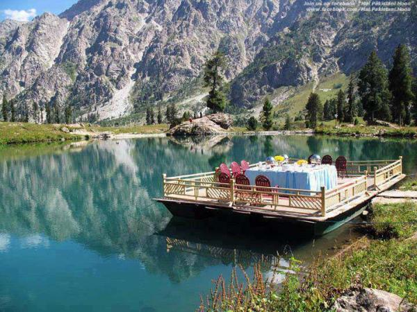
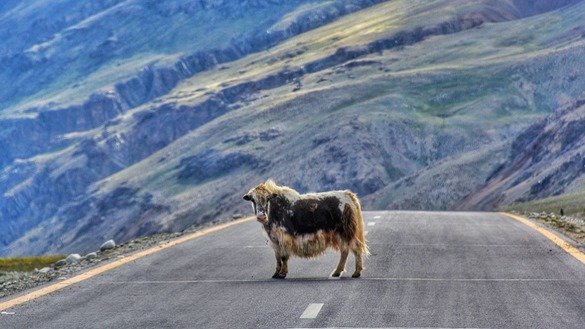
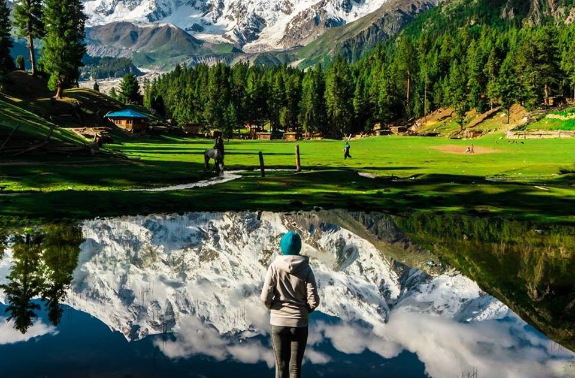
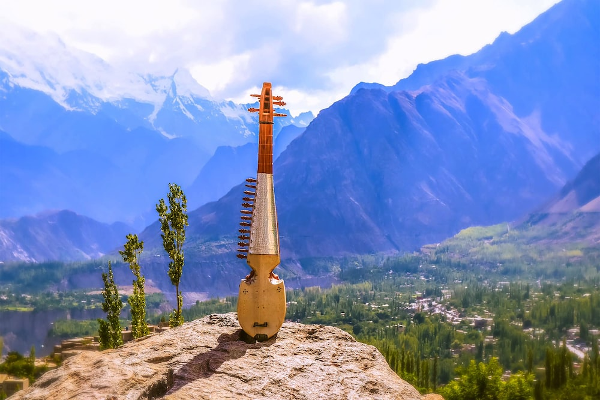
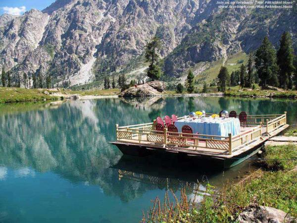
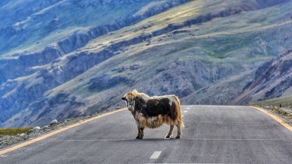
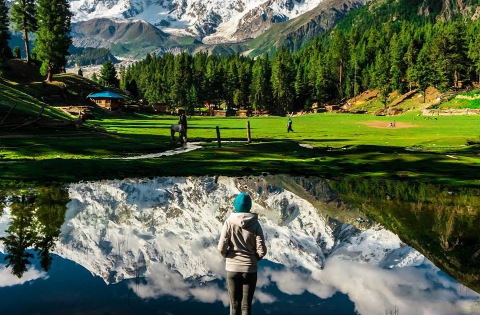
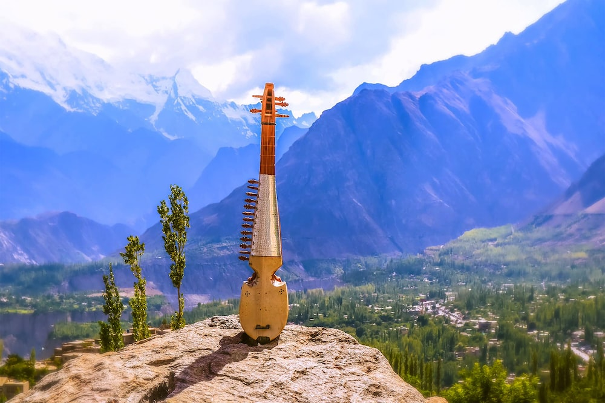

Gilgit
Situated at an elevation of 1,454 metres along the banks of Gilgit River, a quaint little town of Gilgit has spectacular scenic beauty. For centuries, it had been the capital of various dynasties. Its history goes well beyond the 6th century AD. What to see? Gilgit Bridge is a bridge over the fast-flowing Gilgit River. This is one of the largest suspension bridges in South Asia (182 metres long and 2 metres wide) allowing enough space for one jeep at a time to cross. A beautiful standing Buddha figure (locally known as «Yashini») is carved on a rock near KargahNullah), 10 km from Gilgit town. It dates back to the 7th century AD. Remains of a Buddhist monastery and stupas of the 6th century AD were discovered in 1938 and 1956 near Nurpur. There are also ancient rock carvings of animals near the Karakorum University and inscriptions near Danyore. Built in 1962, Independence Monument is a tribute to the heroes of the liberation movement of 1947–48. A victory monument of Taj Mughal, built 700 years ago, as a reminder of Taj-ud-Din Mughal, a ruler who came to Gilgit Baltistan during the 13th century, AD, is 30 km jeep drive from Gilgit town. Sher Qila (Lion’s Fort), situated 38 km west of Gilgit, was once the capital of the ancient Kingdom of Punial. It has a polo ground, an old carved wooden mosque and a 150-year-old watchtower, crowned with a pair of Ibex horns. Gahkuch Headquarters of Ghizer District is an ideal place for trekking, fishing and duck shooting. Yasin, the main town of the Yasin Valley, 112 km west of Gilgit, is located at the altitude of 2,750 m above sea level. People of Yasin speak Brushisky and Khowar languages. Until the 20th century, Yasin was an important kingdom controlling the shortest and easiest route between the Oxus and the Indus rivers.
Beautiful Views of Gilgit
 






